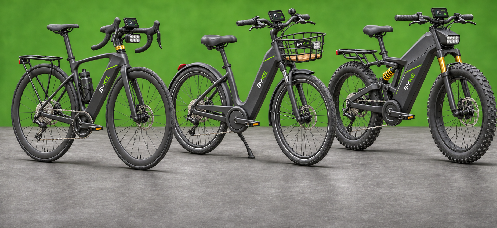
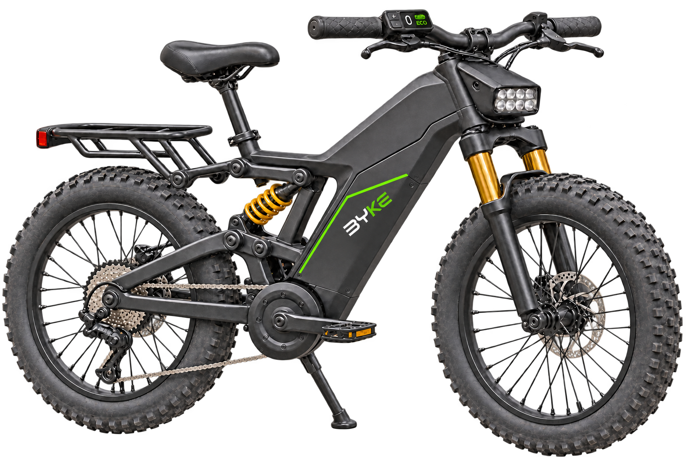

Liberdade de escolha
Cada pessoa tem um ritmo. A mobilidade precisa caber nele.
Descubra a liberdade de ter uma bicicleta elétrica moderna em casa, por assinatura trimestral, semestral ou anual e pagamento mensal.

01 / SOBRE A BYKE
BUILD YOUR KEEN ENERGYA BYKE é um projeto de mobilidade urbana que aproxima a bicicleta elétrica da rotina. A ideia é simples: ter uma bike à disposição, em casa, sempre que surgir um caminho.
Cada pessoa tem um ritmo. A mobilidade precisa caber nele.
Queremos que começar a pedalar seja tão simples quanto escolher para onde ir.
O desenho da bike parte dos trajetos e das necessidades de quem pedala.

02 / BYKE EM MOVIMENTO
03 / A CIDADE NO SEU RITMO
Comece o dia no seu ritmo e escolha o caminho que faz sentido para você.
Passe na padaria, encontre alguém ou resolva o que ficou para depois.
Explore uma rua nova ou faça do parque a próxima parada.
04 / POR QUE CRIAMOS A BYKE
A BYKE nasceu dessa pergunta. Imaginamos uma bicicleta elétrica que faz parte da vida em casa e dos pequenos trajetos que ligam a gente à cidade. É daí que vem Build Your Keen Energy, o nome que demos à ideia de se mover com energia própria.
05 / CONHEÇA AS BIKES
Descubra os modelos e encontre a bicicleta elétrica para os seus caminhos.
Conhecer as bikes06 / CONHEÇA OS PLANOS
Escolha por quanto tempo quer ter uma BYKE à disposição.
Conhecer os planos